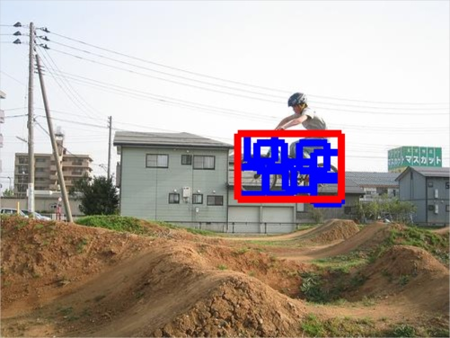
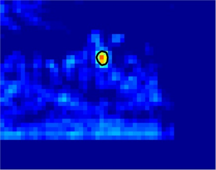
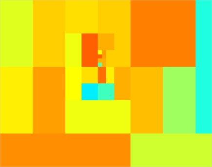
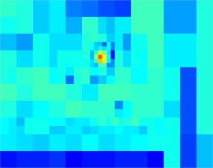

Rapid Deformable Object Detection using Bounding-Based Techniques
|  Object detection with Deformable Part Models |
 Detector score and area scoring above -1 |
|
|
 Bounds computed by BB to get to maximum |
 Bounds computed by CD to find locations > -1 |
This project has been supported by Agence Nationale de Recherche (ANR) under Grant ANR-10-JCJC-0205.
Introduction
This code implements the Dual-Tree Branch and Bound (BB) algorithm in [1] and efficiently optimizes the objective function of [3]. The algorithm combines ideas from the Dual Tree algorithm [5] and Efficient Subwindow Search (ESS) for detection [6]. The code also includes some more recent extensions covered in [1a], including a tighter bounding scheme and the implementation of Cascade Detection (CD), along the lines of [7]. Branch-and-bound/Cascade detection are implemented in c++, and interface with Matlab through mex files.The current release also includes the lookup-based bounds presented in [1b], their incorporation with DTBB and Cascaded detection with DPMs, and also fixes some small inaccuracies at image boundaries.
Software and licences
Our code builds on the system distributed in [4] under the GNU GPL. We include a slightly adapted version of that software, allowing us to extract timing information, and also to compile it in windows. We include parts of source code from the ESS implementation [6] and the Dual Tree implementation in [8], released under the Apache and the GNU GPL licences respectively. Our code is distributed under the GNU-gpl v2.Usage
Unzip the file and move into the formed directory. The distribution comes with precomputed mex files for 64-bit windows, linux and mac systems. If you have a different architecture, run makefile_release.m demo_0, demo_1, and demo_2 should run (please let me know if you encounter problems).How to cite
We request that you cite [1] when using our code for your academic work. If you use some of the extensions in [1a], please cite appropriately.Evaluation
Our contribution in [1] is an efficient optimization of the Mixture-of-DPM objective in [3], replacing the Generalized Distance Transform (GDT)- based detection with Branch-and-Bound (BB). In [1a] we consider also Cascaded Detection, which turns out to be faster when using a fixed threshold. Optimizing the score in [3] with GDTs scales linearly in image size, while the best-case complexity of BB is logarithmic.In the evaluation we consider the following cases:
demo_1: single object category detection
demo_2: multi-category detection.
Another feature of our code is that we provide an accurate, but more efficient implementation of unary potential computation in `batch mode' using Matlab. Comparing to the convolution implementation of [2,3] this can result in an 5-8-fold speedup, while for multi-object detection the speedup can be more than 10-fold. Multi-threaded computation comes for free through Matlab, but we don't use it in our evaluation for fairness' sake.
Please see demo_0 for details.
References
[1] Iasonas Kokkinos. Rapid Deformable Object Detection using Dual Tree Branch and Bound. In Neural Information Processing Systems (NIPS) 2011. [pdf][1a] Iasonas Kokkinos. Rapid Deformable Object Detection using Bounding-based Techniques. INRIA Research Report 7940, 2012. [pdf]
[1b] Iasonas Kokkinos. Bounding Part Scores for Rapid Detection with Deformable Part Models 2nd Parts and Attributes Workshop, in conjunction with ECCV 2012 [2] P. Felzenszwalb, R. Girshick, D. McAllester, D. Ramanan. Object Detection with Discriminatively Trained Part Based Models. IEEE Transactions on Pattern Analysis and Machine Intelligence, Vol. 32, No. 9, Sep. 2010.
[3] P. Felzenszwalb, R. Girshick, D. McAllester. Cascade Object Detection with Deformable Part Models. Proceedings of the IEEE CVPR 2010.
[4] P. Felzenszwalb, R. Girshick, D. McAllester. Discriminatively Trained Deformable Part Models, Release 4. [link]
[5] A. Gray and A. Moore, Very Fast Multivariate Kernel Density Estimation via Computational Geometry., in Proceedings Joint Stat. Meeting 2003.
[6] C. Lampert, M B. Blaschko and T. Hofmann. Efficient Subwindow Search: A Branch and Bound Framework for Object Localization. IEEE Transactions on Pattern Analysis and Machine Intelligence, Vol. 31, No. 12, Dec. 2009.
[7] C. H. Lampert. An efficient divide-and-conquer cascade for nonlinear object detection. In CVPR, 2010.
[8] A. Ihler, E. Sudderth, W. Freeman, A. Willsky. Efficient Multiscale Sampling from Products of Gaussian Mixtures. In Neural Information Processing Systems (NIPS) 2003. [link]
Downloads
Code, bundled together with distribution of [3] dtbb.zip.